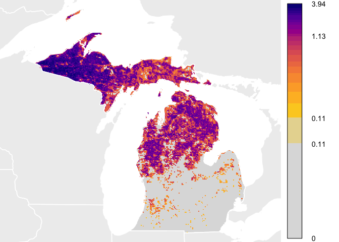

THIS PACKAGE IS UNDER ACTIVE DEVELOPMENT. FUNCTIONALITY MAY CHANGE AT ANY TIME.
The goal of this package is to provide tools for loading, mapping, plotting, and analyzing eBird Status and Trends data products. If you’re looking for the previous version (known as stemhelper), which is no longer being maintained, please access the stemhelper_archive branch.
You can install ebirdst from GitHub with:
# install the development version from GitHub
# install.packages("devtools")
devtools::install_github("CornellLabofOrnithology/ebirdst")TODO: update website, then updated this section.
For a full introduction and advanced usage, please see the package website. An introductory vignette is available, detailing the structure of the results and how to begin loading and mapping the results. Further, an advanced vignette details how to access additional information from the model results about predictor importance and directionality, as well as predictive performance metrics.
This quick start guide will show you how to download example data and plot abundance values similar to how they are plotted for the eBird Status and Trends Abundance animations. IMPORTANT. AFTER DOWNLOADING THE RESULTS, DO NOT CHANGE THE FILE STRUCTURE. All functionality in this package relies on the structure inherent in the delivered results. Changing the folder and file structure will cause errors with this package.
library(viridis)
library(raster)
library(rnaturalearth)
# DOWNLOAD DATA
# Currently, example data is available on a public s3 bucket. The following
# download_data() function copies the species results to a selected path and
# returns the full path of the results. Please note that the example_data is
# for Yellow-bellied Sapsucker and has the same run code as the real data,
# so if you download both, make sure you put the example_data somewhere else.
species <- "yebsap-ERD2016-EBIRD_SCIENCE-20180729-7c8cec83"
sp_path <- download_data("~/tmp/", species = species, example_data = TRUE)
print(sp_path)
#> [1] "~/tmp//yebsap-ERD2016-EBIRD_SCIENCE-20180729-7c8cec83"
# load estimated relative abundance and label with dates
abunds <- raster::stack(paste0(sp_path, "/results/tifs/", species,
"_hr_2016_abundance_umean.tif"))
abunds <- label_raster_stack(abunds)
# select a week in the summer
abund <- abunds[[26]]
rm(abunds)
# get reference data from the rnaturalearth package
# the example data currently shows only the US state of Michigan
wh_states <- ne_states(country = c("United States of America", "Canada"))
wh_sub <- wh_states[!is.na(wh_states$name) & wh_states$name == "Michigan", ]
# project to Mollweide for mapping and extent calc
mollweide <- CRS("+proj=moll +lon_0=-90 +x_0=0 +y_0=0 +ellps=WGS84")
# the nearest neighbor method preserves cell values across projections
abund_moll <- projectRaster(abund, crs = mollweide, method = 'ngb')
# project the reference data as well
wh_states_moll <- spTransform(wh_states, mollweide)
# calculate ideal color bins for abundance values for this week
week_bins <- calc_bins(abund_moll)
# start plotting
par(mfrow = c(1, 1), mar = c(0, 0, 0, 6))
# use the extent object to set the spatial extent for the plot
plot(as(extent(trim(abund_moll, values = NA)), "SpatialPolygons"),
col = 'white', border = 'white')
# add background reference data
plot(wh_states_moll, col = "#eeeeee", border = NA, add = TRUE)
# plot zeroes as gray
plot(abund_moll == 0, maxpixels = ncell(abund_moll),
ext = extent(trim(abund_moll, values = NA)), col = '#dddddd',
xaxt = 'n', yaxt = 'n', legend = FALSE, add = TRUE)
# define color bins
these_cols <- rev(viridis::plasma(length(week_bins$bins) - 2, end = 0.9))
grayInt <- colorRampPalette(c("#dddddd", these_cols[1]))
qcol <- c(grayInt(4)[2], these_cols)
# plot abundances
plot(abund_moll, maxpixels = ncell(abund_moll),
ext = extent(trim(abund_moll, values = NA)), breaks = week_bins$bins,
col = qcol, xaxt = 'n', yaxt = 'n', legend = FALSE, add = TRUE)
# for legend, create a smaller set of bin labels
bin_labels <- format(round(week_bins$bins, 2), nsmall = 2)
bin_labels[!(bin_labels %in% c(bin_labels[1],
bin_labels[round((length(bin_labels) / 2)) + 1],
bin_labels[length(bin_labels)]))] <- ""
bin_labels <- c("0", bin_labels)
# create colors that include gray for 0
lcol <- c('#dddddd', qcol)
# set legend such that color ramp appears linearly
ltq <- seq(from = week_bins$bins[1], to = week_bins$bins[length(week_bins$bins)],
length.out = length(week_bins$bins))
ltq <- c(0, ltq)
# plot legend
plot(abund_moll ^ week_bins$power, col = lcol, legend.only = TRUE,
breaks = ltq ^ week_bins$power, lab.breaks = bin_labels, legend.shrink = 0.97,
legend.width = 2, axis.args = list(cex.axis = 0.9, lwd.ticks = 0))
# add state boundaries on top
plot(wh_states_moll, add = TRUE, border = 'white', lwd = 1.5)